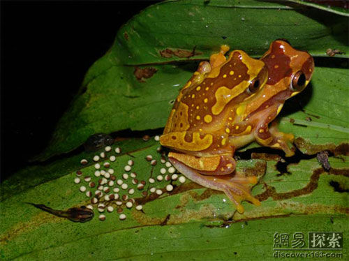
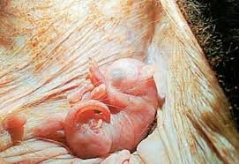

魚與兩棲類是如何繁殖的呢?
- 請同學看看展示的資料，找找看這幾類動物是如何繁殖?
- 同學們可以看看展示的一些動物，看看這些動物的繁殖方式!
- 找不到答案嗎!?請點選下面的"顯示答案"!!
魚與兩棲類的繁殖
魚與兩棲類的卵必須在潮濕中發育。
大部分種類的卵產於水中，少數兩棲類產於潮濕的陸地上，或攜帶著卵往潮濕的地方去。
需水的卵
生命起源於水中，故最早的脊椎度物產卵於水中。
有些動物縱然成體可上陸生活，但必須回到水中產卵，稱為兩棲類。
對很多動物而言，水不但是卵發育的要件，也是受精必須，因為精子必須在水中才能游向卵子。
魚兒同時釋放經子與卵子，受精卵就沉到水底，有些黏性的卵可附著在水草上。

交配時雄蛙抱住雌蛙，刺激其排卵，雄蛙亦同時排精，卵遂在水中受精。卵通常大而有黏性，故黏成一團。
。
蛙卵先在水中發育成蝌蚪，約16星期後變態為小蛙，登上陸地。
為什麼爬蟲類的卵都會有殼呢？
- 請同學看看展示的資料，找找看卵有硬殼是為了甚麼呢?
- 同學們可以看看展示的一些範例，看看哪些動物的卵會有硬殼!
- 找不到答案嗎!?請點選下面的"顯示答案"!!
爬蟲類的繁殖
大多數爬蟲類所產的卵，都是有殼的，卵殼可保護胚胎免於乾燥，也就是說爬蟲類並不需要在水中繁衍後代。
哺乳類的胎盤主要是用來做甚麼的呢？
- 請同學看看展示的資料，了解一下胎盤有甚麼用處呢?
- 同學們可以看看展示的一些動物，看看哪些動物會有胎盤!
- 找不到答案嗎!?請點選下面的"顯示答案"!!
哺乳類的繁殖
哺乳類的卵在體內受精。胚胎在子宮發育，並受美欽的保護和供給養分。出生後，幼獸靠吸允母奶長大。
動物身上有袋子的，稱為有袋類。僅產於澳洲和南美。

小袋鼠生下來時個體很小，顯得無助。出生後爬到母親的帶中尋獲一個奶頭，牠在袋中吃了好幾個月的奶，直到能獨立生活才離開。
有胎盤的哺乳類分布全世界，他們是最成功的陸妻脊椎動物。
胚胎在母體的子宮裡生活了好幾個月，子宮裡的胎盤是母體營養運輸到子體的通道。